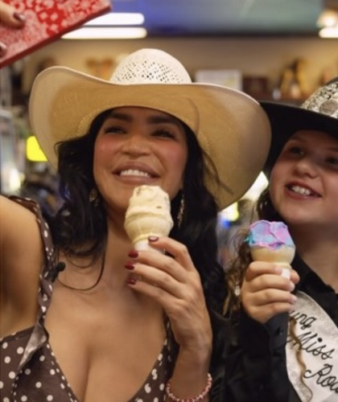
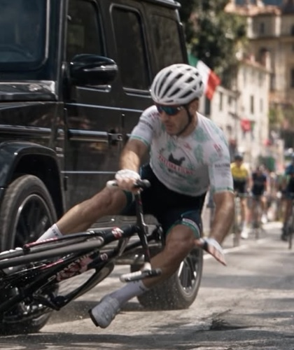

Recent work


Selected projects
- Production reel2024
- John GallettaPromo film
- Sheriff Chad BiancoCampaign promo
- Ivette SaucedoCreator video
What we shoot
- Farm and ranch films
- Your operation as it runs day to day, cut for your website, your buyers, or your investors.
- Brand films
- For feed stores, equipment dealers, wineries, butchers, and food brands.
- Interviews and testimonials
- Wireless lav mics and a calm setup, so people talk like themselves.
- Rodeos and events
- Gimbal coverage from the arena floor and the stands.
- Drone footage
- Aerials of land, herds, arenas, and property.
- Social cuts
- Vertical edits for Instagram, Reels, and TikTok from the same shoot day.
- More than one language
- Interviews, captions, and voiceover for audiences beyond English.
How a shoot works
Call
We talk about what the video is for and who will watch it.
Scout
We walk the property, check the light, and plan the shots.
Shoot day
A small crew that knows to close gates and stay out of the way of stock.
Edit
You review a first cut and tell us what to change.
Delivery
Final files for your site, social, and the big screen.
Farmers with cameras
Pastura is a farm and a film crew. We raise pasture-raised food in Norco, the town they call Horsetown USA, and we point cameras at the people doing the same kind of work.
Lucas Negroni has shot and edited since 2009 for Germany's ZDF, the newspaper BILD, and Mattel. His work won a European Newspaper Award in 2012 and a RIAS Digital Media Award in 2016, and his film Bangers to the Bible was nominated for Best Documentary at the 2018 American Black Film Festival.
We shoot on Sony A7 IV cameras with DJI gimbals, wireless audio, and a drone.
Book a shoot
Tell us what you want to film. We shoot across Riverside County, Corona, and Los Angeles.